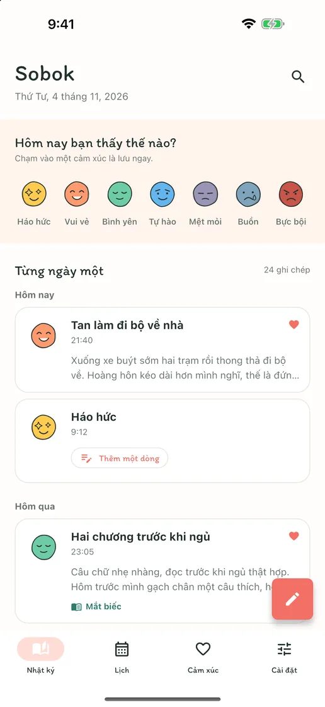
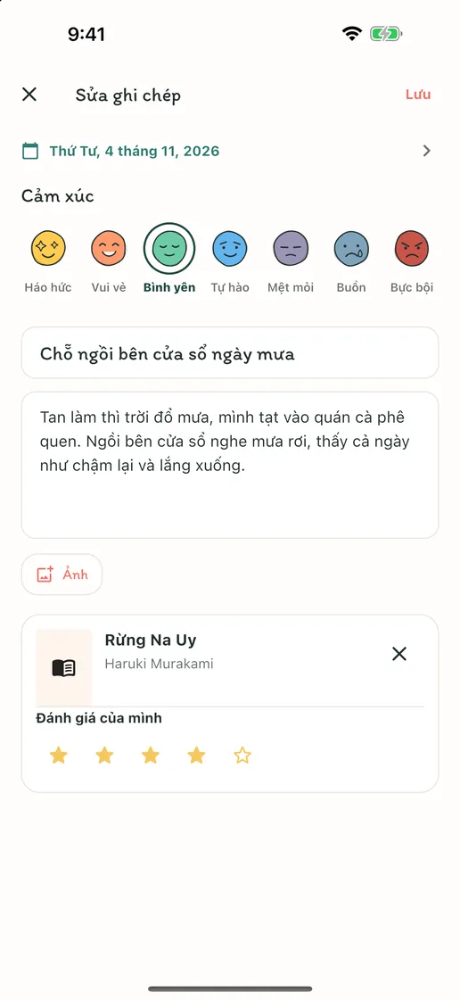
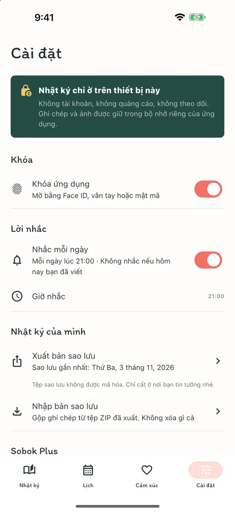
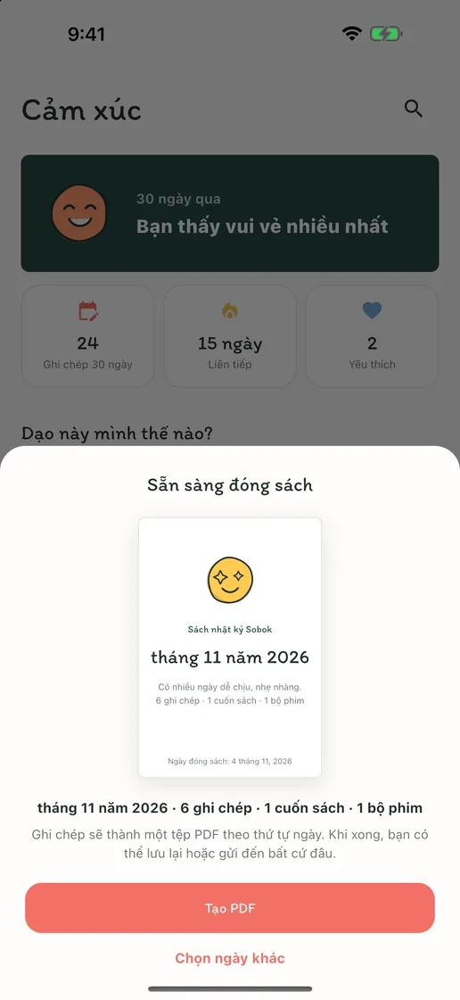
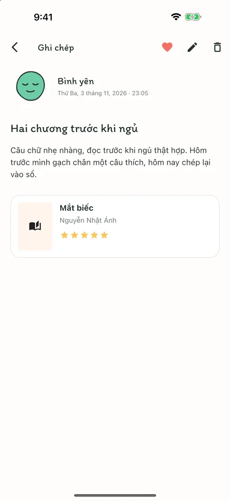
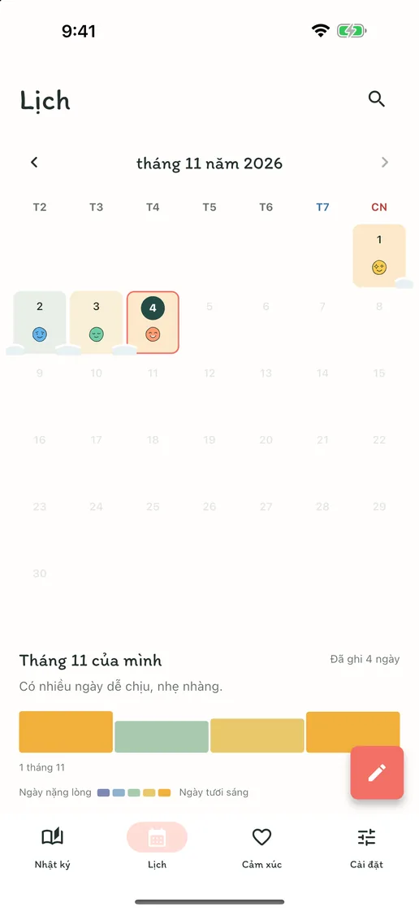
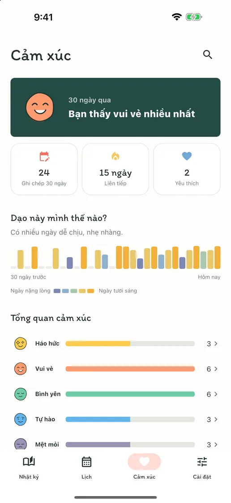

Cảm xúc hôm nay, chỉ một chạm
Chạm vào một trong bảy gương mặt cảm xúc, thế là thành ghi chép của hôm nay. Khi có điều muốn kể, hãy thêm một dòng vào chính ghi chép đó.
Cảm xúc, trang viết, sách và phim
Không tài khoản, quảng cáo hay gói đăng ký. Chạm một cảm xúc là lưu lại hôm nay; bài viết dài, ảnh, cảm nhận sách và phim gói gọn trong một ghi chép. Tất cả trên máy bạn.
Sắp có trên App Store và Google PlayMiễn phí · Có mua trong ứng dụng · iPhone và Android · English · Deutsch · Tiếng Việt · Español · Bahasa Indonesia · 日本語 · 简体中文 · 繁體中文 · ไทย · Português · Français · 한국어


Viết bao nhiêu tùy bạn
Những ngày chẳng có gì để kể, chỉ một chạm vào cảm xúc là lưu lại hôm nay. Những ngày muốn viết, tiêu đề, bài viết dài, ảnh và cảm nhận về cuốn sách vừa đọc hay bộ phim vừa xem đều gói gọn trong một ghi chép.
Chạm vào một trong bảy gương mặt cảm xúc, thế là thành ghi chép của hôm nay. Khi có điều muốn kể, hãy thêm một dòng vào chính ghi chép đó.
Tiêu đề, bài viết dài, ảnh và đánh giá — chỉ thêm những gì bạn muốn trong ngày. Tìm cuốn sách vừa đọc hay bộ phim vừa xem, hoặc tự nhập vào.
Mỗi ngày bạn viết, cảm xúc của ngày ấy đọng lại trên lịch, và những ngày liên tiếp quyện vào nhau như tuyết. Nhìn qua là biết tuần nào vui, tuần nào vất vả.
Bên trong ứng dụng
“Sobok-sobok” là từ tiếng Hàn tả âm thanh tuyết lặng lẽ phủ dày — cũng như những ngày của bạn tích lại nơi đây, từng ngày một.





Không cần tạo tài khoản, không quảng cáo, không theo dõi. Nhật ký chỉ được lưu trên thiết bị của bạn, và bạn có thể xuất toàn bộ ghi chép cùng ảnh thành tệp ZIP rồi mang trở lại trên thiết bị mới. Viết, tìm kiếm, lịch, khóa ứng dụng và sao lưu đều miễn phí; chỉ Sobok Plus, tính năng đóng ghi chép thành sách nhật ký PDF, là giao dịch mua một lần.